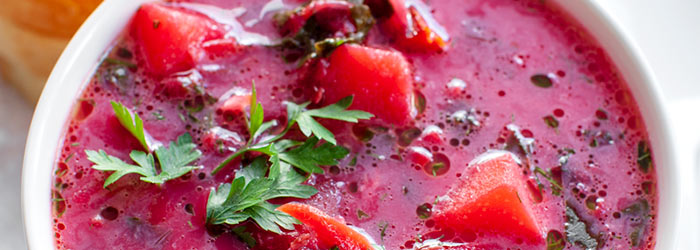

ZUPA BOTWINKOWA Z ZIEMNIAKAMI I WĘDZONKĄ
Opublikowano 29 maja 2018

SKŁADNIKI
- 3 litry wody
- 500 g surowych żeberek
- 400 g wędzonych żeberek (lub 400 g kości wędzonych lub 200 g boczku wędzonego)
- 1 włoszczyzna (2 marchewki, 1 pietruszka, 1 cebula, kawałek pora i selera)
- sól, pieprz, liść laurowy, ziele angielskie
- 400 g ziemniaków
- 1 pęczek botwinki
- 200 g gęstej kwaśnej śmietany 18%
- 2 łyżki posiekanego koperku
PRZYGOTOWANIE
- Do dużego garnka wlać wodę, dodać pokrojone surowe żeberka. Zagotować, zszumować, dodać 1 łyżkę soli i zmniejszyć ogień. Przykryć i gotować przez ok. 1 godzinę.
- Dodać pokrojone wędzone żeberka (lub kości lub boczek w całości) oraz warzywa: 1 obraną marchewkę (drugą dodamy później), obraną pietruszkę, umytą i nieobraną cebulę, pora i obranego selera.
- Dodać liść laurowy, ziele angielskie oraz świeżo zmielony pieprz. Gotować pod przykryciem przez ok. 1 godzinę.
- Usunąć z zupy ugotowanego pora, selera, pietruszkę i cebulę, a dodać obrane i pokrojone w kostkę ziemniaki. Gotować przez ok. 10 minut.
- Botwinkę dokładnie umyć. Odciąć buraczki od liści, obrać je i zetrzeć na tarce o dużych oczkach. Równocześnie obrać też i zetrzeć na tarce drugą marchewkę. Buraczki i marchewkę dodać do zupy i gotować na małym ogniu (zupa ma tylko mrugać) przez ok. 10 minut.
- Liście botwinki drobno poszatkować i dodać do zupy, gotować przez ok. 7 minut. Na koniec dodać posiekany koperek i zaprawić zupę śmietaną (odstawić zupę z ognia i chwilę odczekać aż przestanie się gotować, dodać śmietanę uprzednio rozprowadzoną ze stopniowo dodawanym wywarem z zupy - kilka/kilkanaście łyżek).
PIZZADILLA Z SALAMI I PAPRYKĄ
Opublikowano 29 maja 2018
SKŁADNIKI
- 1 łyżeczka oliwy
- 1 nieduża papryka (lub po kawałku różnokolorowych)
- 180 g tartej mozzarelli (twardszej i żółtej, nie białej z zalewy)
- 40 g salami w plasterkach
- 4 łyżki SOSU DO PIZZY
- 1/2 łyżeczki suszonego oregano
- świeża bazylia
- 2 łyżeczki masła
- 2 duże tortille (śr. 25 cm)
PRZYGOTOWANIE
- Paprykę pokroić w drobną kostkę, doprawić solą i podsmażyć chwilę na łyżeczce oliwy, odłożyć na talerz.
- Na dużej patelni rozgrzać i rozprowadzić łyżeczkę masła. Położyć placek tortilli i wyłożyć na niego połowę tartego sera, podsmażoną paprykę i plasterki salami. Skropić równomiernie sosem, posypać suszonym oregano i listkami bazylii. Posypać drugą połową tartego sera.
- Przykryć drugim plackiem tortilli i podsmażać ok. 2 minuty, aż tortilla na spodzie się zrumieni.
- Podgrzaną z jednej strony pizzadillę przełożyć na drugą stronę** i ponownie podsmażyć na maśle do zrumienienia. Przełożyć na deskę, posypać listkami bazylii i kroić na kawałki jak pizzę.